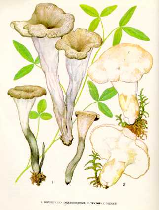

1. ВОРОНОЧНИК РОЖКОВИДНЫЙ
Растет в лиственных и смешанных лесах скученными группами, иногда по нескольку десятков штук. Плодовые тела появляются в августе - сентябре.
Плодовое тело длиной 5-10 см, 3-5 см в диаметре, трубчатое, воронко-видное, книзу постепенно суживающееся в ножку. Края отогнуты наружу. Внешняя поверхность (гимениальный слой) морщинистая, серовато-сизая, внутренняя поверхность черновато-бурая. Споры эллипсоидные, гладкие. Мякоть тонкая, резинистая,без особого вкуса и запаха.Ножка очень короткая, толщиной 0,8 см, цилиндрическая, одного цвета со шляпкой.
Малоизвестный съедобный гриб
четвертой категории. Используется так же, как лисичка
желтеющая
*Употребляется свежим, пригоден для сушки..
2. ТРУТОВИК ОВЕЧИЙ,
ОВЕЧИЙ
ГРИБ
Встречается в сухих хвойных лесах в августе — сентябре. Растет в одиночку или
группами, иногда срастаясь ножками. Шляпка до 10 см в диаметре, 1—2 см толщины,
округлая или несколько неправильная, с бугорком, белая, бледно-сероватая,
серовато-желтая, слабочешуйчатая, к старости растрескивающаяся. Мякоть плотная,
сырообразная, сначала белая, при засыхании лимонно-желтая, без особого вкуса и
запаха. Трубчатый слой белый, трубочки 1—2 мм длины, нисходящие по ножке.
Споровый порошок белый. Споры почти шаровидные или яйцевидные, гладкие. Ножка
до 7 см длины, 3—4 см толщины, плотная, к основанию суженная, белая, гладкая.
Съедобный гриб четвертой категории. В пищу употребляются только молодые шляпки
свежими, кроме того, они пригодны для сушки.